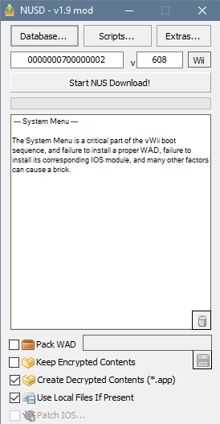
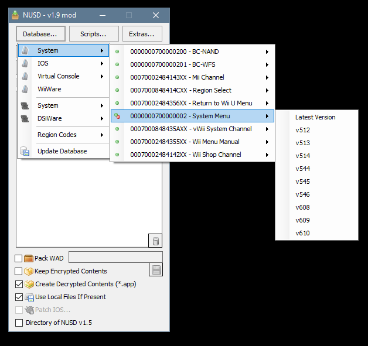
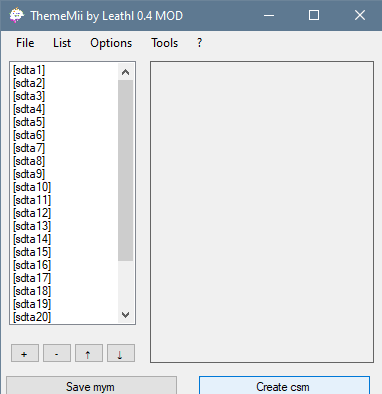

Installazione temi del Menu Wii su vWii
Stanco del noioso, piatto tema bianco del Wii Menu, e vuoi invece un tema figo? Questo tutorial ti aiuterà ad ottenere un nuovo tema per il tuo Wii Menu!
Noi NON siamo responsabili se bricki, o danneggi la tua console in un qualunque modo. Se segui attentamente questa guida, non dovresti avere problemi.
NON installare i temi creati con questa guida su una Wii normale. Questi sono compatibili solo con il menu di sistema del vWii e provocherà un brick nel Wii normale.
I WiiMote con Wii MotionPlus non fonziuneranno con MyMenuify, purtroppo non c’è nulla che possiamo fare al momento e dovrai utilizzare un telecomando Wii più vecchio.
Ci sono alcuni temi che non sono compatibili con il menu di sistema del vWii, possono avre effetti inaspettati, da problemi grafici al brick. Si consiglia di usare solo temi provenienti da rc24.xyz/goodies/themes poiché sono compatibili con le versioni moderne del Menu di Sistema.
Se il vWii entra in stato di brick, segui questa guida. (Versione archiviata)
Ciò di cui hai bisogno
- Un Wii U con il Canale Homebrew installato.
- Un Wiimote senza Wii MotionPlus
- Una scheda SD
- Un computer con Windows (oppure usare Mono o Wine su un Mac/Linux)
- MyMenuify
- ThemeMii Mod
- NUS Downloader (vWii)
Link per dei Temi
Di seguito sono riportati alcuni collegamenti ai temi.
Solo i temi dalla pagina dei temi di RiiConnect24 sono stati testati su vWii. I temi provenienti da altre fonti potrebbero non essere totalmente compatibili con il vWii, usali a tuo rischio.
ASSICURATI DI LEGGERE GLI AVVISI DI SICUREZZA SOPRA PRIMA DI CONTINUARE!
Istruzioni
Sezione 1 - Trovare un Tema
-
Quando scegli un tema, assicurarti che sia compatibile con il vWii.
-
I vecchi temi per 3.X o 2.X NON sono compatibili con il vWii e possono causare brick se utilizzati.
-
La maggior parte dei temi nella pagina dei temi di RiiConnect24 sono stati testati su vWii e risultano funzionanti.
Sezione 2- Scaricare i file .app
È presupposto che il tuo vWii sia all’ultima versione del Wii Menu.
Ci sono un paio di modi per ottenere i file .app per il Menu di Sistema del vWii, in questa guida utilizzeremo la versione vWii di NUS Downloader.
- Estrai il file .zip di NUS Downloader per vWii e apri l’applicazione
- Clicca su
Database... - Vai su
System>System Menue seleziona la versione corrispondente alla regione come mostrato nella tabella sottostante.
| Regione | Versione Menu vWii |
|---|---|
| Giappone | v608 |
| USA | v609 |
| Europa | v610 |
Dopo aver selezionato la versione corretta da scaricare, seleziona la casella Create Decrypted Contents (*.app). Premi il pulsante Start NUS Download nella parte superiore della finestra.


After the download has finished, search for .app file corresponding to your region in the folder where NUS Downloader is.
| Regione | file .app corrispondente |
|---|---|
| Giappone | 0000001c.app |
| USA | 0000001f.app |
| Europa | 00000022.app |
Se non riesci a trovare il file .app, è possibile che tu abbia scaricato la versione sbagliata del Menu Wii e dovrai riprovare.
Dopo aver trovato il file .app, copialo nella directory principale della cartella contenente ThemeMii. Dopodiché, creane una copia nella cartella dei temi nella scheda SD.
Sezione 3 - Creare il Tema
- Avvia ThemeMii Mod.
- Non selezionare
Download Base App, ThemeMii non ha alcun file base .app per il vWii. Se scarichi una base app, è necessario eliminarla per utilizzare il file .app per vWii. - In ThemeMii seleziona
File->Opene vai al tema in formato .mym che hai scaricato prima. - Clicca su
Create CSMe seleziona il file .app che hai copiato nella cartella ThemeMii. - Adesso vai alla cartella dei temi sulla scheda SD e salva il tema con l’estensione .csm.

Sezione 4 - Installare il Tema
- Espelli la scheda SD dal PC e inseriscila nel Wii U.
- Avvia il Canale Homebrew e apri MyMenuify.
- Vai alla cartella dei temi e seleziona il file .csm che hai appena creato.
- Quando ti viene chiesto di installare il rema conferma con
Yese attendi che finisca. - A installazione finita, MyMenuify ti farà scegliere tra
ContinueedExit, scegliExit.
Se hai fatto tutto correttamente, dovresti avere il tuo tema personalizzato installato nel Menu Wii.
Ripristinare il tema originale
- Apri il Canale Homebrew.
- Avvia MyMenuify e vai alla cartella dei temi.
- Seleziona il file .app copiato sulla scheda SD alla fine della sezione 2 come se stessi installando un tema.
- Selezione Install e attendi che finisca.
- Quando ha finito, puoi uscire da MyMenuify.